1. Living organisms
Living systems have cellular organisation, metabolism and the ability to sense and respond to their surroundings. No single visible trait is sufficient on its own.
Review the key questions, correct answers and explanations. Recall each idea before revealing it in your mind.
Living systems have cellular organisation, metabolism and the ability to sense and respond to their surroundings. No single visible trait is sufficient on its own.
All living organisms are made of one or more cells. Cells are the basic structural and functional units of life.
All chemical reactions in living systems together constitute metabolism. Anabolism builds complex molecules; catabolism breaks them down.
Living organisms generally grow from within, through cell division or enlargement. Non-living crystals can grow by external deposition.
Reproduction produces new individuals, but it is not universal for every living individual: mules and sterile worker bees do not reproduce.
Living organisms can sense and respond to physical, chemical or biological stimuli, such as light, touch, temperature and gravity.
| Property | Important exam distinction |
|---|---|
| Growth | Occurs in living organisms, but also in non-living crystals; not a defining feature by itself. |
| Reproduction | Not shown by all individual living organisms; cannot alone define life. |
| Metabolism | A defining feature of living systems; isolated metabolic reactions may occur in vitro without making the test tube living. |
| Consciousness | Awareness of surroundings and response to stimuli are key characteristics of living organisms. |
Some living individuals, such as mules and sterile worker bees, cannot reproduce.
Crystals grow through external deposition, while living organisms typically grow internally by cell division or enlargement.
Anabolism builds molecules; catabolism breaks molecules down. Both are components of metabolism.
Mimosa pudica leaves fold in response to touch.
Biodiversity is the variety and variability of living organisms, including diversity within species, between species and among ecosystems.
Variation in genes within a species or among its populations. Examples include different rice varieties and genetic variation in mango.
Variety of species in an area. Species richness is the number of species; evenness describes how individuals are distributed among them.
Variety of habitats and ecosystems, such as forests, wetlands, deserts and grasslands.
Species richness generally increases from the poles towards the tropics. Larger sampled areas usually contain more species.
In-situ conservation protects species in their natural habitats; ex-situ conservation protects them outside natural habitats, such as in seed banks and botanical gardens.
| Level | What varies? | Example |
|---|---|---|
| Genetic | Genes within a species | Rice varieties |
| Species | Species present in an area | Birds, insects and plants in a forest |
| Ecosystem | Habitats and ecological communities | Wetland versus grassland |
Genetic diversity, species diversity and ecosystem diversity.
Richness counts species; evenness describes their relative abundances.
In-situ: national park. Ex-situ: seed bank.
Tropics, in the broad latitudinal diversity gradient.
Millions of organisms differ in form, habitat and function. Grouping them systematically makes identification, study and communication easier.
Classification helps recognise an organism by comparing its diagnostic characteristics with those of known groups.
Scientific names reduce confusion caused by local and common names. Each species is assigned a standard binomial name.
Modern classification uses shared characteristics and evolutionary evidence to understand relationships among organisms.
Organisms are arranged into nested taxonomic ranks: species, genus, family, order, class, phylum or division, and kingdom.
Taxonomy deals with identification, nomenclature and classification. Systematics additionally examines evolutionary relationships.
| Term | Meaning |
|---|---|
| Identification | Determining what an organism is |
| Nomenclature | Assigning a standard scientific name |
| Classification | Arranging organisms into groups |
| Systematics | Studying organismal diversity and evolutionary relationships |
To organise biological diversity, support identification, enable consistent naming and understand relationships.
Species.
Systematics also considers evolutionary relationships among organisms.
Species → Genus → Family.
Species is the fundamental unit of classification. It groups organisms with important shared characteristics and a distinct identity.
For many sexually reproducing organisms, a species consists of natural populations that can interbreed and are reproductively isolated from other such groups.
Barriers to successful gene exchange help keep species distinct. They may act before fertilisation or after a hybrid forms.
Shared structural features help identify and distinguish species, especially when reproductive information is unavailable.
The biological species concept is difficult to apply to asexual organisms, fossils and some populations that hybridise.
A genus contains one or more closely related species. In Mangifera indica, Mangifera is the genus and indica the specific epithet.
| Concept | Key idea |
|---|---|
| Species | Basic taxonomic category |
| Genus | Group of closely related species |
| Biological species | Interbreeding populations reproductively isolated from others |
| Morphological species | Identified using diagnostic structural traits |
Species.
Barriers restrict successful interbreeding or gene exchange between populations.
Most bacteria reproduce asexually, so interbreeding-based criteria do not apply in the usual way.
Mangifera.
A taxonomic hierarchy is a sequence of nested categories used to classify organisms from the most specific group to the broadest.
The fundamental taxonomic category. Closely related individuals are placed in the same species; example: Mangifera indica.
A genus groups closely related species; a family contains related genera. Solanum is a genus in family Solanaceae.
Related families form an order, and related orders form a class. For mango, the order is Sapindales and the class is Magnoliopsida in a traditional scheme.
Related plant classes are grouped into a division; divisions are grouped into a kingdom. Mango belongs to kingdom Plantae.
Lower categories generally share more characteristics. Higher categories include more organisms but have fewer traits common to all members.
| Rank | Example: Mango |
|---|---|
| Species | Mangifera indica |
| Genus | Mangifera |
| Family | Anacardiaceae |
| Order | Sapindales |
| Class | Magnoliopsida (traditional classification) |
| Division | Magnoliophyta (traditional classification) |
| Kingdom | Plantae |
Plant classifications may use different modern clade names; the rank sequence shown here is the conventional NEET hierarchy.
Species → Genus → Family → Order → Class → Division/Phylum → Kingdom.
Family. It contains one or more related genera.
They generally decrease as broader groups contain more diverse organisms.
Anacardiaceae.
A taxonomic category is a rank such as genus or family. A taxon is an actual group placed at that rank, such as Solanum (genus) or Solanaceae (family).
Species is the basic category. It includes organisms with important common features; Mangifera indica is the species name of mango.
A genus groups closely related species. Panthera includes lion (P. leo) and tiger (P. tigris).
A family groups related genera. Solanum, Petunia and Datura are genera placed in Solanaceae.
An order includes related families, while a class includes related orders. As rank increases, the group becomes broader.
Related classes form a division in traditional plant classification or a phylum in animal classification. Kingdom is the broadest of these seven principal ranks.
| Category (rank) | Example of a taxon |
|---|---|
| Species | Mangifera indica |
| Genus | Mangifera |
| Family | Anacardiaceae |
| Order | Sapindales |
| Class | Magnoliopsida (traditional) |
| Division | Magnoliophyta (traditional) |
| Kingdom | Plantae |
Solanaceae is a taxon; family is its category.
Family.
Species.
They generally decrease as the groups become broader.
Each species has a genus name followed by a specific epithet. Example: Mangifera indica (mango).
Capitalise the genus, use lowercase for the specific epithet, and italicise both when printed. Underline each word separately when handwritten.
Scientific names provide a standard way to identify organisms across languages and regions.
Carolus Linnaeus popularised the binomial naming system. Modern names follow internationally agreed nomenclature codes.

The genus name.
Underline the genus and specific epithet separately.
Carolus Linnaeus.
A collection of dried, pressed and labelled plant specimens stored on sheets for reference and identification.
Maintain living plant collections with scientific labels for study, conservation and education.
Preserve specimens in jars, as dry preparations or as skeletons for scientific study.
Identify organisms through a sequence of contrasting character choices, often presented as paired statements (couplets).

Herbarium.
Taxonomic key.
A detailed account of a particular taxonomic group.
A collection of dried, pressed and preserved plant specimens mounted on labelled sheets for identification and reference.
Collect → press → dry → mount → label → store. Specimens are protected from moisture and pests.
Usually records scientific name, collection locality, date, collector and other field details.
Supports plant identification, classification, biodiversity records and comparison with reference specimens.

No. They are preserved, usually dried and pressed specimens.
Scientific name, locality and collection date (collector is also commonly recorded).
It provides reference specimens for plant identification, classification and research.
Botanical gardens grow and maintain living plants for identification, education, research and conservation.
Plants are commonly labelled with scientific names and family details, helping visitors recognise different taxa.
Living collections can help protect threatened plants outside their natural habitats: ex-situ conservation.
Indian Botanic Garden, Howrah, and Royal Botanic Gardens, Kew, are well-known examples.

Living plants.
Ex-situ conservation.
Indian Botanic Garden, Howrah, or Royal Botanic Gardens, Kew.
A taxonomic aid used to identify organisms by choosing between contrasting characteristics.
Each pair of contrasting statements is a couplet; each individual statement is a lead.
Observe a character → choose the matching lead → follow the next step until an organism is identified.
Indented keys and bracketed keys present paired choices in different layouts. Both help narrow identification.
Illustrative branching key, not a complete species-identification key.
A pair of contrasting statements in a taxonomic key.
One statement of a couplet.
To identify an organism using observable characteristics.
Prokaryotic, usually unicellular organisms. Example: bacteria and cyanobacteria.
Mostly unicellular eukaryotes. Examples: Amoeba, Euglena and diatoms.
Eukaryotic heterotrophs that absorb nutrients; most have chitinous cell walls. Example: mushroom.
Mostly multicellular, photosynthetic eukaryotes with cellulose cell walls. Example: mango plant.
Multicellular eukaryotic heterotrophs that ingest food; cells lack cell walls. Example: elephant.
Proposed the five-kingdom system in 1969 using cell structure, body organisation, nutrition, reproduction and phylogenetic relationships.
R. H. Whittaker, in 1969.
Monera.
Fungi.
Prokaryotic organisms: no membrane-bound nucleus or organelles.
Cocci = spherical; bacilli = rods; vibrios = comma-shaped; spirilla = spiral.
Nostoc and Anabaena are photosynthetic; some cells called heterocysts fix nitrogen.
Methanogens live in anaerobic habitats; Mycoplasma lacks a cell wall.
Autotrophic or heterotrophic; bacteria commonly divide by binary fission.
Schematic revision illustration (not a microscope photo).
Illustrative symbols; not specimen photographs.
Mycoplasma.
A specialised nitrogen-fixing cell in some cyanobacteria.
Comma-shaped.
Mostly unicellular eukaryotes, commonly found in aquatic habitats.
Diatoms have silica-rich walls; deposits form diatomaceous earth.
Two flagella; some, such as Gonyaulax, can cause red tides.
Euglena has a pellicle and can photosynthesise in light.
Amoeba uses pseudopodia; Paramecium uses cilia; slime moulds form spores.
Schematic revision illustration (not a microscope photo).
Illustrative symbols; not specimen photographs.
Diatoms.
A flexible pellicle.
Certain dinoflagellates.
Eukaryotic absorptive heterotrophs with chitin-containing cell walls.
Thread-like hyphae form a mycelium; yeast is unicellular.
Saprophytic, parasitic or symbiotic; fungi digest food externally.
Asexual spores include conidia and sporangiospores; sexual spores vary by group.
Phycomycetes, ascomycetes, basidiomycetes and deuteromycetes (traditional grouping).
Schematic revision illustration (not a microscope photo).
Illustrative symbols; not specimen photographs.
A network of hyphae.
Yeast.
Chitin.
A stable symbiotic association of a fungus and a photosynthetic alga or cyanobacterium.
Mycobiont = fungal partner; photobiont = alga or cyanobacterium.
Photobiont supplies photosynthate; fungus provides protection and absorbs water and minerals.
Lichens can colonise rocks and bark; some help weather rock surfaces.
Many lichens are sensitive to air pollution, especially sulphur dioxide.
Schematic revision illustration (not a microscope photo).
Illustrative symbols; not specimen photographs.
The fungal partner.
The photobiont.
Many are sensitive to atmospheric pollution.
Acellular infectious agents: viruses have genetic material inside a protein coat; viroids are naked infectious RNA.
A virus contains either DNA or RNA, surrounded by a capsid made of capsomeres.
Viruses reproduce only inside living host cells.
Viroids are small infectious RNA molecules without a protein coat; potato spindle tuber disease is an example.
Illustrative symbols, not specimen photographs.
A protein capsid.
No.
Bacteria.
Mostly aquatic, photosynthetic, thalloid organisms with simple body organisation.
Chlorophyceae contain chlorophyll a and b; reserve food is mainly starch.
Phaeophyceae contain fucoxanthin; reserve food includes laminarin and mannitol.
Rhodophyceae contain phycoerythrin; reserve food is floridean starch.
Illustrative symbols, not specimen photographs.
Fucoxanthin.
Floridean starch.
Spirogyra.
Small non-vascular land plants with a dominant gametophyte; water is needed for fertilisation.
The green, haploid gametophyte is the dominant independent plant body.
Flagellated male gametes swim through water to the egg in the archegonium.
The diploid sporophyte remains attached to and dependent on the gametophyte.
Illustrative symbols, not specimen photographs.
The gametophyte.
For motile male gametes to reach the egg.
Sphagnum.
Seedless vascular plants with a dominant sporophyte and spore-based reproduction.
True roots, stems and leaves contain xylem and phloem.
Spores form by meiosis; the small gametophyte bears antheridia and archegonia.
Motile male gametes usually require water to reach the egg.
Illustrative symbols; not specimen photographs.
Diploid sporophyte.
No; they reproduce by spores.
Selaginella.
Seed plants with ovules exposed rather than enclosed within an ovary.
Ovules are not enclosed in an ovary; true fruits are absent.
Male and female reproductive structures commonly occur as strobili or cones.
Pollen transfer does not require free water for swimming sperm in most gymnosperms.
Illustrative symbols; not specimen photographs.
Ovules are not enclosed within an ovary.
Pinus.
No.
Flowering seed plants with ovules enclosed in an ovary and seeds enclosed by fruit.
Stamens produce pollen; carpels enclose ovules.
One sperm fuses with egg; the other fuses with the central cell, usually producing triploid endosperm.
The ovary usually develops into a fruit after fertilisation.
Illustrative symbols; not specimen photographs.
The ovary.
Syngamy plus fusion of the second sperm with the central cell.
Maize.
Two major flowering-plant groups traditionally compared by cotyledons, leaf venation and roots.
One cotyledon; often parallel venation, fibrous roots and floral parts in threes.
Two cotyledons; often reticulate venation, taproots and floral parts in fours or fives.
Monocot vascular bundles are often scattered and closed; dicot bundles usually form a ring and are open.
Illustrative symbols; not specimen photographs.
One.
Reticulate venation.
Monocots.
Photosynthetic pigments help distinguish green, brown and red algal groups.
Chlorophyll a and b predominate; chlorophyll reflects green light.
Chlorophyll a and c plus fucoxanthin, a brown xanthophyll.
Chlorophyll a and phycobilins, notably phycoerythrin; many also contain phycocyanin.
Illustrative symbols; not specimen photographs.
Fucoxanthin.
Phycoerythrin.
Chlorophyll a.
Algae supply food, industrial hydrocolloids and ecological services.
Extracted from red algae such as Gelidium and Gracilaria; used in culture media and foods.
Algin comes from brown algae; carrageenan from red algae.
Aquatic algae fix carbon, release oxygen and support food webs.
Illustrative symbols; not specimen photographs.
Red algae, e.g. Gelidium and Gracilaria.
Brown algae.
They are major aquatic primary producers.
The haploid gametophyte is dominant; the diploid sporophyte depends on it.
Produces sperm in antheridia and eggs in archegonia.
Swimming sperm need water to reach the egg, producing a diploid zygote.
The attached sporophyte produces haploid spores by meiosis.
Simplified cycle schematic; arrows show major stages.
Illustrative symbols; not specimen photographs.
Gametophyte.
Sporophyte by meiosis.
Motile sperm swim to the egg.
The vascular diploid sporophyte is dominant; spores grow into small gametophytes.
The main fern plant bears sporangia that form haploid spores by meiosis.
A spore grows into a prothallus bearing antheridia and archegonia.
Water allows motile sperm to reach the egg; the zygote forms a new sporophyte.
Simplified cycle schematic; arrows show major stages.
Illustrative symbols; not specimen photographs.
Prothallus.
Sporophyte.
Selaginella.
The diploid seed-bearing sporophyte is dominant; gametophytes are highly reduced.
Male structures form pollen; ovulate structures bear exposed ovules.
Pollen reaches the ovule, and a pollen tube commonly delivers male gametes.
After fertilisation, the embryo develops in a seed not enclosed in a fruit.
Simplified cycle schematic; arrows show major stages.
Illustrative symbols; not specimen photographs.
Diploid sporophyte.
A seed formed from an ovule not enclosed in an ovary.
Pinus.
Flowering plants have a dominant diploid sporophyte and highly reduced gametophytes.
Anthers produce pollen grains; ovules contain embryo sacs.
One sperm fuses with the egg to form a zygote; another fuses with the central cell to form endosperm.
The ovule becomes a seed; the ovary usually becomes a fruit.
Simplified learning diagram.
Illustrative symbols; not specimen photographs.
Diploid sporophyte.
Usually the ovary.
Endosperm, typically triploid.
Plants alternate between haploid gametophyte and diploid sporophyte phases.
Produces gametes by mitosis; fertilisation creates the diploid zygote.
Produces haploid spores through meiosis.
Bryophytes: gametophyte dominant; ferns and seed plants: sporophyte dominant.
Simplified learning diagram.
Illustrative symbols; not specimen photographs.
The sporophyte by meiosis.
Gametophyte.
Sporophyte.
Compare plant groups by vascular tissue, seeds, flowers and dominant generation.
Algae are largely aquatic thalloid forms; bryophytes lack true vascular tissue.
Vascular, seedless plants with dominant sporophytes.
Gymnosperms have exposed ovules; angiosperms have ovules enclosed in an ovary.
Simplified learning diagram.
Illustrative symbols; not specimen photographs.
Pteridophytes.
Gymnosperms.
Angiosperms.
Distinguish major plant groups using vascular tissue, seeds and reproductive structures.
Non-vascular; gametophyte dominant; fertilisation needs water.
Vascular but seedless; sporophyte dominant; reproduce by spores.
Gymnosperms have naked seeds; angiosperms enclose ovules within ovaries.
Simplified learning summary; arrows indicate study order, not necessarily evolutionary ancestry.
Illustrative symbols; not specimen photographs.
Pteridophytes.
Gymnosperms.
Angiosperms.
Algae reproduce vegetatively, asexually and sexually.
Fragmentation produces new individuals from pieces of the thallus.
Many algae form spores, including motile zoospores.
Gamete fusion may be isogamous, anisogamous or oogamous.
Simplified learning summary; arrows indicate study order, not necessarily evolutionary ancestry.
Illustrative symbols; not specimen photographs.
A thallus fragment develops into a new individual.
A motile asexual spore.
Fusion of a large non-motile egg with a smaller male gamete.
Bryophytes reproduce by vegetative propagules and sexually on the gametophyte.
Fragmentation and gemmae can form new gametophytes.
Antheridia produce motile sperm; archegonia contain eggs; water enables fertilisation.
A dependent sporophyte produces haploid spores by meiosis.
Simplified learning summary; arrows indicate study order, not necessarily evolutionary ancestry.
Illustrative symbols; not specimen photographs.
Vegetative reproductive bodies, notably in Marchantia.
Archegonia.
The sporophyte by meiosis.
Seedless vascular plants form spores in sporangia; their gametophytes produce gametes.
Sporangia on the diploid sporophyte produce haploid spores through meiosis.
Spores germinate into a small prothallus in many ferns, with antheridia and archegonia.
Motile sperm require water to reach the egg; the zygote develops into a sporophyte.
Simplified study diagram; arrows indicate a sequence or comparison as appropriate.
Illustrative symbols; not specimen photographs.
In sporangia.
Prothallus.
Selaginella and Salvinia.
Gymnosperms reproduce using pollen and ovules, typically borne on reproductive cones or similar structures.
Microsporangia produce microspores that develop into pollen grains.
Megasporangia within exposed ovules produce megaspores; the female gametophyte develops within the ovule.
Pollination precedes fertilisation; the ovule becomes a naked seed without a surrounding fruit.
Simplified study diagram; arrows indicate a sequence or comparison as appropriate.
Illustrative symbols; not specimen photographs.
A pollen grain (male gametophyte).
The fertilised ovule.
No.
Flowering plants vary widely in form, habitat and floral structure, including monocot and eudicot lineages.
Typically one cotyledon, parallel venation and floral parts in multiples of three.
Typically two cotyledons, net venation and floral parts often in fours or fives.
Angiosperms include herbs, shrubs, trees, climbers, aquatics and epiphytes.
Simplified study diagram; arrows indicate a sequence or comparison as appropriate.
Illustrative symbols; not specimen photographs.
One.
Sunflower.
No; they include herbs, shrubs, trees and other forms.
Bryophytes support soil development, water retention and horticultural applications.
Sphagnum accumulates as peat under waterlogged conditions; peat has been used as fuel and a growing medium.
Sphagnum absorbs and holds large quantities of water, useful in horticulture.
Mosses help colonise bare surfaces, retain moisture and reduce soil erosion.
Illustrative symbols; not specimen photographs.
Sphagnum.
It retains water.
They retain moisture and help stabilise surfaces.
Ferns and their relatives are valued in agriculture, ornamentals and ecology.
Azolla hosts nitrogen-fixing cyanobacteria and is used as green manure in rice cultivation.
Ferns such as Adiantum and Nephrolepis are grown for decorative foliage.
Many pteridophytes contribute to ground cover, habitat structure and soil protection.
Illustrative symbols; not specimen photographs.
Azolla.
Biological nitrogen fixation.
Adiantum or Nephrolepis.
Gymnosperms supply wood, pulp, resins, foods and important medicinal compounds.
Conifers such as Pinus are sources of softwood used in construction and paper.
Pinus resin yields products including rosin and turpentine.
Taxus is a source of paclitaxel; some Pinus species yield edible pine nuts.
Illustrative symbols; not specimen photographs.
Pinus.
Taxus.
Softwood.
Flowering plants supply most human food crops as well as fibres, medicines, oils and timber.
Rice, wheat and maize provide cereals; pulses, fruits and vegetables supply nutrition.
Cotton provides textile fibre; sunflower, mustard and groundnut yield edible oils.
Cinchona is a source of quinine; teak and other hardwood trees supply timber.
Illustrative symbols; not specimen photographs.
Rice and wheat (maize also qualifies).
Cotton (Gossypium).
Cinchona.
Plant tissues are groups of cells with common origin and function, broadly divided into meristematic and permanent tissues.
Actively dividing cells produce new tissues and enable plant growth.
Parenchyma, collenchyma and sclerenchyma mainly provide storage, support and other functions.
Xylem conducts water and minerals; phloem translocates organic food.
Illustrative symbols; not specimen photographs.
Meristematic tissue.
Parenchyma, collenchyma and sclerenchyma.
Phloem.
Meristems contain actively dividing, relatively undifferentiated cells responsible for primary and secondary growth.
Located at root and shoot tips; increases length during primary growth.
Occurs near nodes or leaf bases in some plants, especially grasses; enables regrowth.
Vascular cambium and cork cambium increase girth during secondary growth.
Illustrative symbols; not specimen photographs.
Root and shoot tips.
Intercalary meristem.
Lateral meristem.
Permanent tissues arise when meristematic cells differentiate and become specialised for plant functions.
Living, usually thin-walled cells involved in storage, photosynthesis and repair.
Collenchyma provides flexible support; sclerenchyma provides rigid strength.
Complex permanent tissues xylem and phloem transport water and food.
Illustrative symbols; not specimen photographs.
Parenchyma.
Collenchyma.
Sclerenchyma.
Parenchyma is a simple permanent tissue of living, generally thin-walled cells, often with intercellular spaces.
Stores starch, water and other substances in organs such as tubers.
Parenchyma with chloroplasts performs photosynthesis in green tissues.
Large air spaces facilitate buoyancy and gas exchange in aquatic plants.
Illustrative symbols; not specimen photographs.
Generally living.
Chlorenchyma.
Parenchyma with large air spaces.
Collenchyma is a living simple permanent tissue that provides flexible mechanical support to growing organs.
Primary cell walls are often thickened at the corners, rich in cellulose and pectin.
Supports young stems and petioles while allowing bending and growth.
Commonly occurs beneath the epidermis of dicot stems and in leaf stalks.
Illustrative symbols; not specimen photographs.
Yes.
Flexible mechanical support.
Beneath the epidermis in young dicot stems and petioles.
Sclerenchyma is a strengthening simple permanent tissue with thick, commonly lignified secondary walls; cells are generally dead at maturity.
Thick lignified walls provide rigidity and protection.
Long, narrow cells contribute tensile strength in plant organs.
Shorter, variably shaped hard cells occur in nutshells and gritty pear tissue.
Illustrative symbols; not specimen photographs.
Fibres and sclereids.
They have thick, commonly lignified secondary walls.
Sclereids.
Xylem is a complex permanent tissue that conducts water and dissolved minerals and provides mechanical support.
Tracheids and vessel elements are dead at maturity and conduct water through lignified walls.
Xylem fibres provide strength; xylem parenchyma is living and stores food.
Water moves mainly from roots toward aerial parts, driven by transpiration pull.
Illustrative symbols; not specimen photographs.
Tracheids and vessel elements.
Xylem parenchyma.
Transpiration pull.
Phloem is a complex permanent tissue that transports sugars and other organic solutes from sources to sinks.
Sieve tube elements conduct assimilates through sieve plates; they lack a nucleus at maturity.
Living companion cells support sieve tube metabolism and help with phloem loading and unloading.
Phloem parenchyma stores materials; phloem fibres give mechanical support.
Illustrative symbols; not specimen photographs.
Mainly organic solutes such as sucrose.
They support sieve tube function.
An organ exporting assimilates, such as a mature photosynthetic leaf.
Roots typically develop from the radicle, anchor plants and absorb water and mineral nutrients.
Primary root persists with lateral branches; typical of many dicots, e.g. mustard.
Many similarly sized roots arise near the stem base; common in monocots such as wheat.
Roots develop from parts other than the radicle, as in banyan prop roots.
Illustrative symbols; not specimen photographs.
Radicle.
Fibrous root system.
Roots arising from parts other than the radicle.
A typical young root shows an outer epiblema, cortex, endodermis, pericycle and central vascular tissues.
Epiblema bears root hairs; the cortex is mainly parenchymatous.
Casparian strips in endodermal cells regulate apoplastic water entry into the stele.
Xylem and phloem occur in alternating radial strands; protoxylem is exarch.

Epiblema (rhizodermis).
Endodermis.
Exarch.
Roots may be modified for food storage, mechanical support, respiration or other special functions.
Carrot and radish have swollen taproots; sweet potato has tuberous adventitious roots.
Banyan prop roots descend from branches; maize stilt roots arise from lower stem nodes.
Pneumatophores in mangroves such as Avicennia project above waterlogged soil.

Mechanical support.
Pneumatophores.
Modified adventitious root.
The stem develops from the plumule, bears nodes and internodes, and supports leaves, branches and reproductive organs.
Nodes bear leaves and axillary buds; internodes lie between successive nodes.
Terminal and axillary buds contribute to shoot growth and branching.
Stems position leaves and flowers and conduct water, minerals and sugars.

Plumule.
The region between two successive nodes.
In the axil of a leaf.
The primary stem has an epidermis, ground tissues and vascular bundles; dicot and monocot stems differ in bundle arrangement.
Vascular bundles typically form a ring, with cambium between xylem and phloem (open bundles).
Numerous vascular bundles are scattered in ground tissue and are usually closed.
Primary stem xylem is typically endarch, with protoxylem toward the pith.

In a ring.
Closed.
Endarch.
Stems may be modified for storage, vegetative propagation, support, protection and photosynthesis.
Rhizomes (ginger), tubers (potato), corms and bulbs store food and help perennation.
Runners, stolons, suckers and offsets enable vegetative propagation.
Stem tendrils climb; thorns protect; phylloclades carry out photosynthesis.

A modified stem.
Rhizome.
A modified green stem that performs photosynthesis.
A typical leaf consists of leaf base, petiole and lamina, and is the main photosynthetic organ of many plants.
Leaf base attaches to the stem; petiole holds the lamina; veins conduct and support.
A simple leaf has an undivided lamina; a compound leaf has distinct leaflets.
Venation, margin, apex, shape and phyllotaxy aid identification.

Leaf base, petiole and lamina.
No.
Neem.
The leaf epidermis protects the lamina, mesophyll performs photosynthesis, and veins transport materials.
Upper and lower epidermis protect the leaf; stomata permit gas exchange.
Palisade cells are chloroplast-rich; spongy mesophyll contains air spaces in dorsiventral leaves.
Xylem conducts water and phloem carries sugars; xylem usually faces the upper leaf surface.

Palisade mesophyll.
Guard cells.
Xylem.
Leaves may change shape and function for climbing, defence, food storage or insect capture.
In pea, leaf parts are modified into tendrils that help climbing.
In many cacti, leaves are modified into spines that reduce herbivory and water loss.
Fleshy leaves store water; pitcher plant leaves are modified to capture insects.

Climbing and support.
Yes.
Nepenthes.
Secondary growth increases the girth of many dicot stems and roots through activity of lateral meristems.
Produces secondary xylem toward the inside and secondary phloem toward the outside.
Forms cork (phellem) outward and phelloderm inward, making the periderm.
Seasonal differences in secondary xylem production can create visible growth rings.

Vascular cambium.
Outside the vascular cambium.
Cork (phellem).
Phyllotaxy is the arrangement of leaves on the stem or branch.
One leaf arises at each node, as in China rose, mustard and sunflower.
Two leaves arise at each node, as in guava and Calotropis.
Three or more leaves arise at a node, as in Alstonia.

Arrangement of leaves on a stem or branch.
Opposite.
Three or more.
Venation is the arrangement of veins and veinlets in the leaf lamina.
Veins form a network, commonly in dicot leaves such as mango.
Veins run approximately parallel, commonly in monocot leaves such as grasses.
Veins contain vascular tissues for transport and also support the leaf blade.

Arrangement of veins and veinlets in a leaf.
Parallel.
Veins and veinlets.
Inflorescence is the arrangement of flowers on a floral axis; growth of the axis distinguishes racemose and cymose types.
The main axis continues to grow; flowers are usually arranged in acropetal succession.
The main axis ends in a flower; flowers generally show basipetal succession.
Raceme, spike, umbel and capitulum are common racemose forms; monochasial and dichasial cymes are cymose forms.

No; it continues growing.
A flower.
Acropetal.
In racemose inflorescences, the main floral axis remains indeterminate; flowers usually develop in acropetal order.
The main axis does not terminate in a flower and can continue producing lateral flowers.
Older flowers occur toward the base; younger flowers are near the apex.
Raceme (mustard), spike (Achyranthes), umbel (coriander), capitulum (sunflower).
No, it continues growing.
Toward the apex.
Raceme.
In cymose inflorescences, the main floral axis terminates in a flower, making growth determinate.
The terminal flower opens first and limits further extension of that axis.
Older flowers occur near the apex or centre; younger flowers develop toward the base or periphery.
Monochasial: one lateral branch; dichasial: two; polychasial: more than two.

A flower.
The terminal flower.
Two.
A typical angiosperm flower bears four whorls on the thalamus: calyx, corolla, androecium and gynoecium.
Calyx (sepals) protects the bud; corolla (petals) often attracts pollinators.
Androecium comprises stamens, each typically with a filament and anther.
Gynoecium comprises carpels with stigma, style and ovary containing ovules.

Calyx, corolla, androecium and gynoecium.
Anther.
Inside the ovary.
Aestivation describes how sepals or petals are arranged in the floral bud relative to members of the same whorl.
Valvate margins touch without overlapping; twisted petals each overlap the next in one direction.
Petal margins overlap irregularly, without a uniform direction.
In pea, the large standard overlaps wings, which overlap the keel.

Arrangement of sepals or petals in a floral bud.
Vexillary.
Adjacent margins touch without overlapping.
Androecium is the male reproductive whorl, comprising stamens with anthers and filaments.
A typical stamen consists of filament and anther; anther pollen sacs form pollen grains.
Monadelphous stamens have united filaments in one bundle; diadelphous in two bundles.
Epipetalous stamens attach to petals, as in brinjal; epiphyllous stamens attach to perianth, as in lily.

Anther and filament.
Filaments united in one bundle.
Pollen grains.
Gynoecium is the female reproductive whorl, formed by one or more carpels with stigma, style and ovary.
Stigma receives pollen; style connects stigma to ovary; ovary encloses ovules.
Apocarpous = free carpels; syncarpous = fused carpels.
Ovules generally become seeds and the ovary usually develops into the fruit.

Stigma, style and ovary.
Two or more carpels fused together.
A seed.
Placentation is the arrangement of ovules on the placenta within the ovary.
Marginal: ovules along ventral suture of a single carpel (pea). Axile: ovules attached to central axis in multilocular ovary (tomato).
Parietal: ovules attached to inner ovary wall (mustard). Free-central: central column without septa (Dianthus).
One or few ovules arise from ovary base, as in sunflower.

Marginal.
To a central axis in a multilocular ovary.
Basal.
A fruit generally develops from a ripened ovary after fertilisation and protects and disperses seeds.
Fruit wall develops from the ovary wall and may differentiate into epicarp, mesocarp and endocarp.
Mango is a drupe with a stony endocarp; tomato is a berry.
Legumes dehisce along sutures; caryopsis is characteristic of cereals such as wheat.

Pericarp.
Drupe.
Fruit development without fertilisation.
A seed is a mature ovule containing an embryo, protective seed coat and often stored food.
Integuments become the protective testa and tegmen; the micropyle remains as a small pore.
Bean embryo typically has two cotyledons and a plumule and radicle.
Maize has a single cotyledon (scutellum) and usually persistent endosperm.

The ovule.
Two.
Scutellum.
A typical dicot embryo contains two cotyledons attached to an embryonic axis with plumule and radicle.
Two cotyledons store or absorb nutrients; bean and pea are typically non-endospermic at maturity.
Plumule develops into shoot; radicle develops into primary root.
Testa and tegmen protect the embryo; hilum marks attachment and micropyle allows water entry.

Two.
Radicle.
Yes.
Maize and many other cereals have one cotyledon (scutellum), a persistent endosperm and protective embryonic sheaths.
The single cotyledon lies adjacent to the endosperm and absorbs nutrients during germination.
Starchy endosperm stores food; an outer aleurone layer is protein-rich.
Coleoptile protects the plumule and coleorhiza protects the radicle.
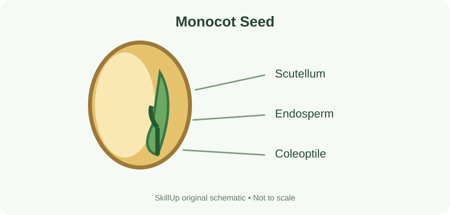
Scutellum.
Coleoptile.
Coleorhiza.
Recognise important angiosperm families through floral symmetry, ovary position, stamens, placentation and fruit type.
Zygomorphic papilionaceous corolla, usually 9+1 diadelphous stamens and legume fruit.
Actinomorphic pentamerous flowers, five epipetalous stamens, bicarpellary superior ovary and berry/capsule.
Trimerous flowers with six tepals, six epiphyllous stamens and tricarpellary superior ovary.

Fabaceae.
Solanaceae.
Six.
Fabaceae (pea family) typically has a zygomorphic papilionaceous corolla, diadelphous stamens and a superior monocarpellary ovary.
Five petals: one standard, two wings and two keel petals; vexillary aestivation.
Usually ten stamens, with nine united and one free (diadelphous).
Monocarpellary superior ovary with marginal placentation; fruit a legume.

The standard overlaps wings, which overlap the keel.
Nine united stamens and one free.
Legume.
Solanaceae (potato family) commonly has actinomorphic pentamerous flowers, epipetalous stamens and a bicarpellary superior ovary.
Typically actinomorphic, bisexual, pentamerous and hypogynous.
Five stamens, usually epipetalous (attached to the corolla).
Bicarpellary syncarpous superior ovary, usually axile placentation; berry or capsule.

Stamens attached to petals.
Two, fused.
Axile.
Liliaceae (lily family) is typically trimerous, with six tepals, six epiphyllous stamens and a tricarpellary superior ovary.
Six tepals in two whorls of three, often petaloid.
Six epiphyllous stamens, arranged as 3 + 3.
Three fused carpels, superior ovary, axile placentation; capsule or berry.
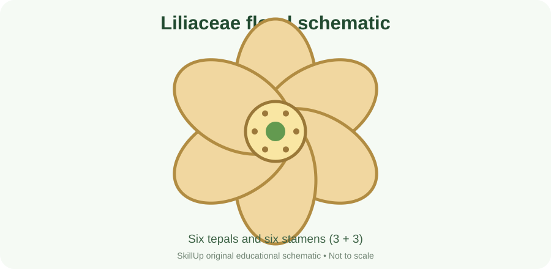
Six, arranged 3 + 3.
Stamens attached to the perianth.
Three fused carpels.
Plant tissues are organised into epidermal, ground and vascular tissue systems, each with characteristic functions.
Outermost protective covering, including epidermis, stomata and epidermal appendages.
Most internal tissues other than vascular bundles; includes cortex, pith and mesophyll.
Xylem transports water and minerals; phloem transports organic food.
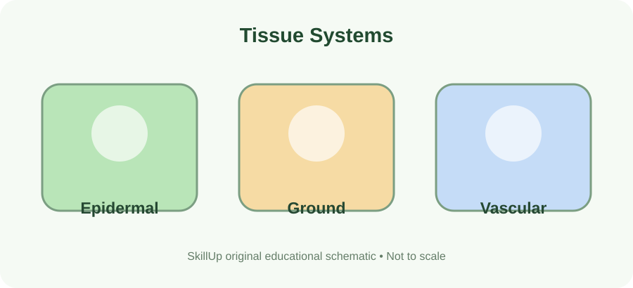
Epidermal, ground and vascular.
Vascular tissue system.
Ground tissue system.
The epidermal tissue system forms the outermost protective covering of primary plant organs.
A usually single cell layer with a waxy cuticle on many aerial parts to reduce water loss.
Pores bounded by guard cells regulate gas exchange and transpiration.
Root hairs absorb water; shoot trichomes can reduce water loss or provide protection.
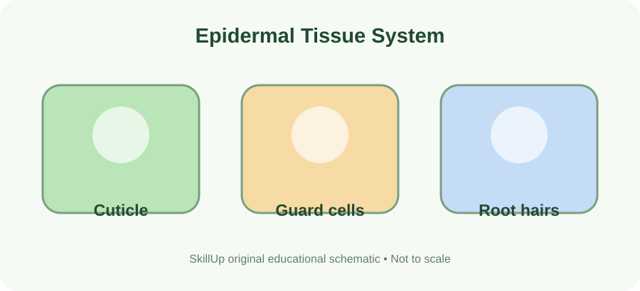
Guard cells.
Absorption of water and minerals.
Waxy cuticle.
The ground tissue system includes tissues other than epidermal and vascular tissues, supporting photosynthesis, storage and mechanical strength.
Living thin-walled cells for storage, metabolism and photosynthesis.
Living cells with unevenly thickened walls provide flexible support.
Usually dead, lignified cells provide mechanical strength.
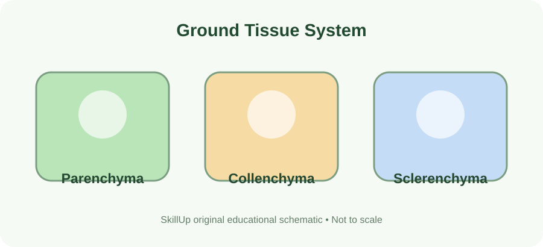
Collenchyma.
Sclerenchyma.
Mesophyll.
The vascular tissue system is composed of xylem and phloem, arranged in vascular bundles for conduction and support.
Conducts water and minerals; consists of tracheids, vessels, fibres and parenchyma.
Transports photosynthates; contains sieve elements, companion cells, fibres and parenchyma.
Radial bundles in roots; conjoint bundles commonly occur in stems and leaves.
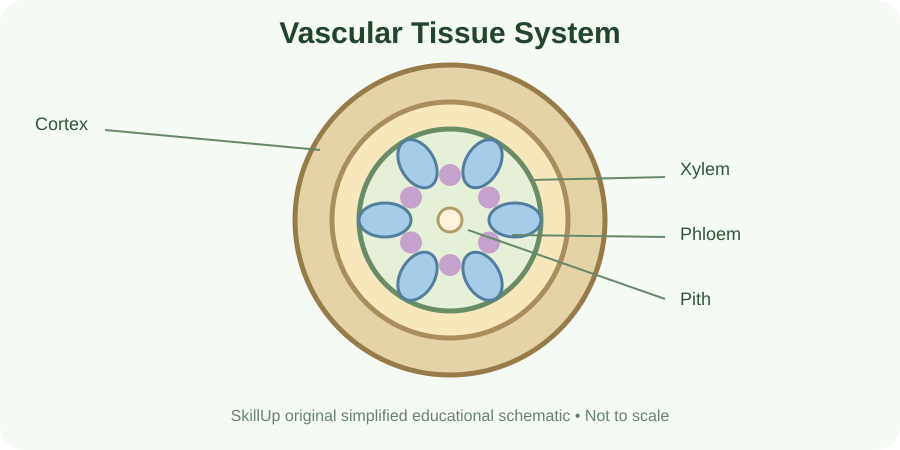
Xylem and phloem.
A vascular bundle containing cambium.
Radial.
A typical dicot root transverse section shows epiblema, cortex, endodermis, pericycle and a radial vascular cylinder with exarch xylem.
Epiblema bears root hairs; cortex is parenchymatous; endodermis contains Casparian strips.
Pericycle lies inside endodermis; radial xylem and phloem alternate.
Xylem is exarch and usually has relatively few poles; pith is small or inconspicuous.
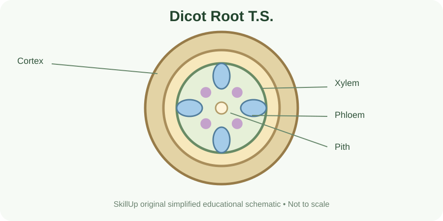
Protoxylem lies toward the periphery.
In the endodermis.
No, it is usually small or inconspicuous.
A typical monocot root transverse section has a well-developed cortex, endodermis and pericycle surrounding a radial, polyarch vascular cylinder and large pith.
Epiblema with root hairs, parenchymatous cortex and endodermis with Casparian strips.
Numerous alternating xylem and phloem patches; xylem is exarch.
Large, well-developed parenchymatous pith; ordinary secondary growth is absent.
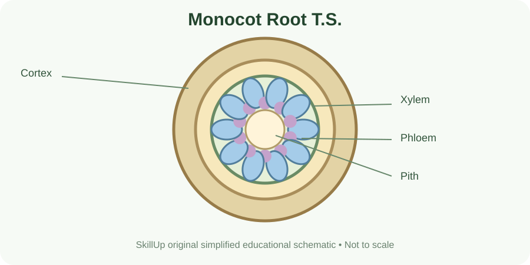
Many xylem poles.
Large and well developed.
No.
A typical dicot stem has a single-layered epidermis, differentiated cortex and vascular bundles arranged in a ring.
Hypodermis is commonly collenchymatous; cortex, endodermis, pericycle and central pith are distinguishable.
Vascular bundles are conjoint, collateral and open, with cambium between xylem and phloem.
Protoxylem lies toward the pith; interfascicular cambium may form during secondary growth.
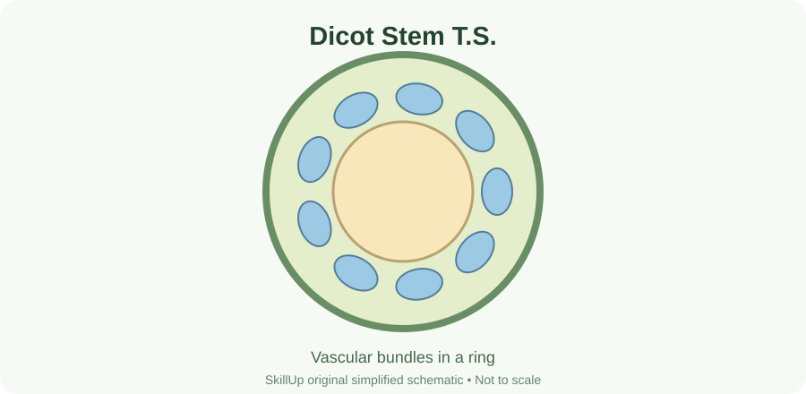
In a ring.
Presence of cambium.
Toward the pith.
A typical monocot stem has a sclerenchymatous hypodermis and scattered closed vascular bundles embedded in undifferentiated ground tissue.
Cortex, endodermis, pericycle and pith are generally not distinctly separated.
Conjoint collateral closed bundles with a sclerenchymatous bundle sheath; no vascular cambium.
A water-filled cavity may form where protoxylem breaks down; xylem is endarch.
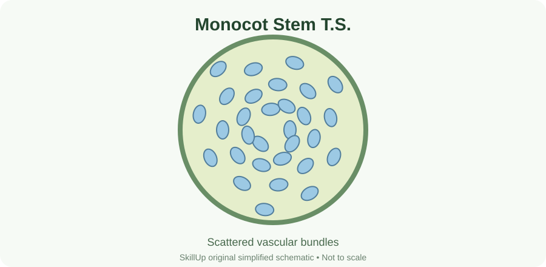
Closed.
Scattered in ground tissue.
A cavity formed by disintegration of protoxylem elements.
A dorsiventral leaf, common in dicots, has structurally distinct upper and lower surfaces and differentiated mesophyll.
Elongated, closely packed chloroplast-rich cells lie beneath the upper epidermis.
Loosely arranged cells with large intercellular spaces occur toward the lower epidermis.
Stomata are usually more abundant on the lower epidermis; xylem faces upper surface in veins.
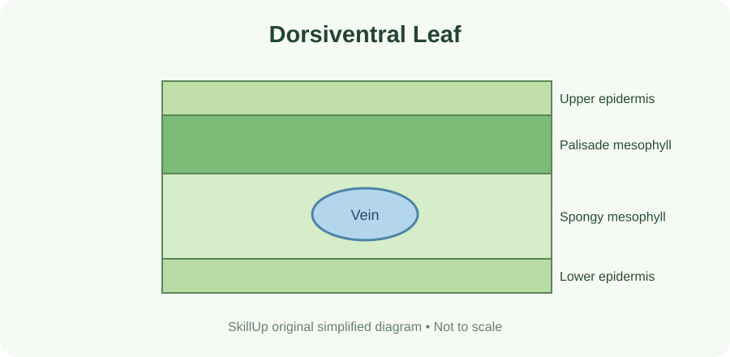
Below the upper epidermis.
Spongy mesophyll.
Lower epidermis.
An isobilateral leaf, typical of many monocots, has broadly similar upper and lower surfaces, with mesophyll often not differentiated into palisade and spongy layers.
Stomata may occur on both epidermal surfaces; mesophyll is usually undifferentiated.
Many vascular bundles run along the blade, with xylem adaxial and phloem abaxial.
Large thin-walled cells on the upper epidermis of many grass leaves help leaf rolling during water stress.
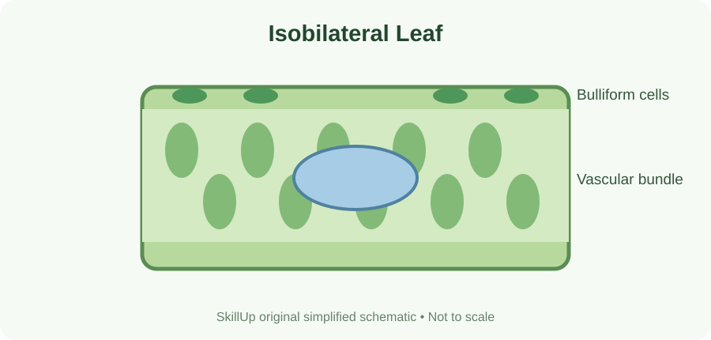
No.
Upper epidermis of many grass leaves.
Stomata occur on both leaf surfaces.
Annual growth rings arise from seasonal differences in vascular cambium activity and secondary xylem production in many woody plants.
Earlywood forms during favourable growing conditions, with wider xylem elements and lower density.
Latewood forms as growth slows, with narrower xylem elements and denser wood.
One annual ring typically comprises a band of earlywood and latewood; growth conditions can affect ring clarity.
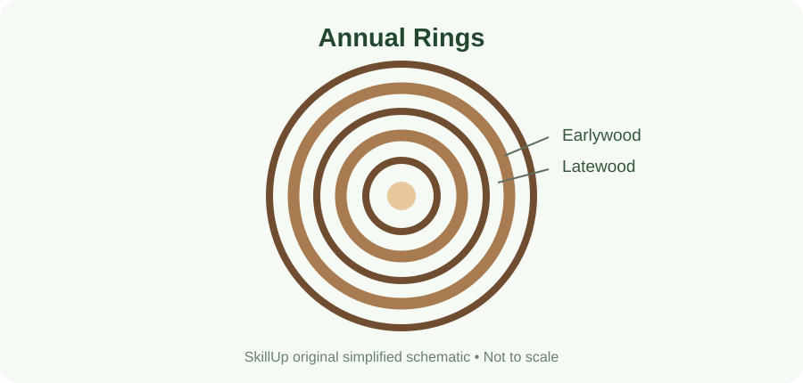
Vascular cambium.
Spring wood (earlywood).
One seasonal cycle of secondary xylem growth.
Cork cambium (phellogen) is a lateral meristem that forms the periderm during secondary growth.
Cork cambium divides to form phellem outward and phelloderm inward.
Cork cells are generally dead at maturity and suberised, restricting water loss.
Small openings in the periderm permit gaseous exchange in woody organs.
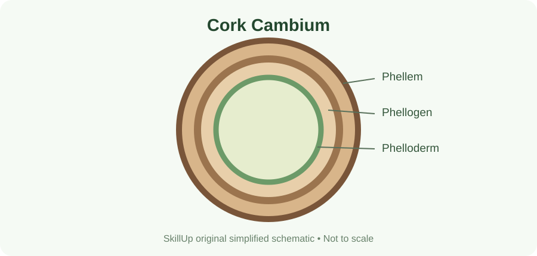
Phellogen.
Phellem (cork).
Gaseous exchange.
In woody stems, secondary xylem differentiates into inner non-conducting heartwood and outer water-conducting sapwood.
Older inner secondary xylem; usually darker, filled with deposits and no longer conducts water.
Younger outer secondary xylem; actively transports water and dissolved minerals.
Tannins, resins and other deposits often make heartwood more resistant to decay.
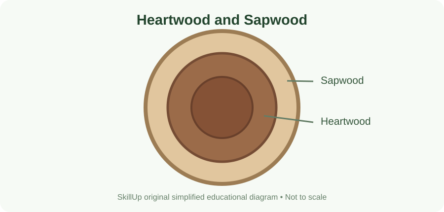
Sapwood.
Inner part of woody stem.
Deposition of substances such as tannins and resins.
The stomatal apparatus consists of the stomatal pore, two guard cells and associated subsidiary cells when present.
Opening through which carbon dioxide, oxygen and water vapour exchange.
Turgor changes regulate pore aperture; typically kidney-shaped in dicots and dumbbell-shaped in grasses.
Specialised neighbouring epidermal cells may assist guard cell function.
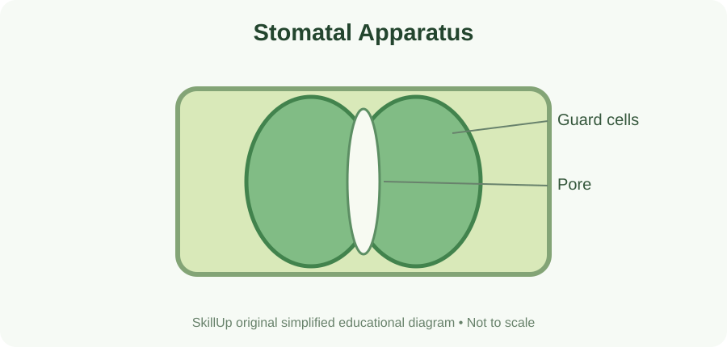
Guard cells.
Dumbbell-shaped.
Gas exchange and transpiration.
Trichomes are epidermal outgrowths of aerial plant parts that may protect against water loss, herbivory or excess radiation.
Trichomes may be unicellular or multicellular, branched or unbranched.
Non-glandular hairs can reduce transpiration and deter herbivores.
Some trichomes secrete oils, resins or defensive substances.
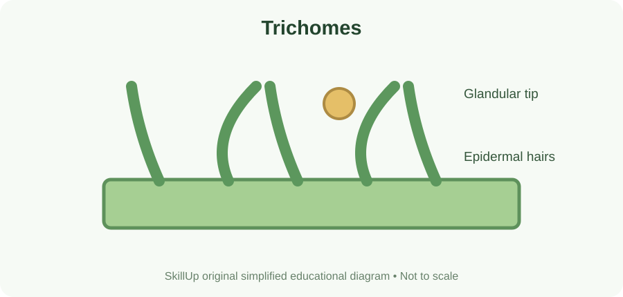
Epidermis.
Yes.
Protection and reduction of water loss.
The root cap is a protective tissue covering the growing root apex and helping the root penetrate soil.
Root cap cells shield the delicate apical meristem from abrasion.
Peripheral cap cells slough off and are replaced as the root grows.
Statocytes in the root cap sense gravity through sedimenting amyloplasts.
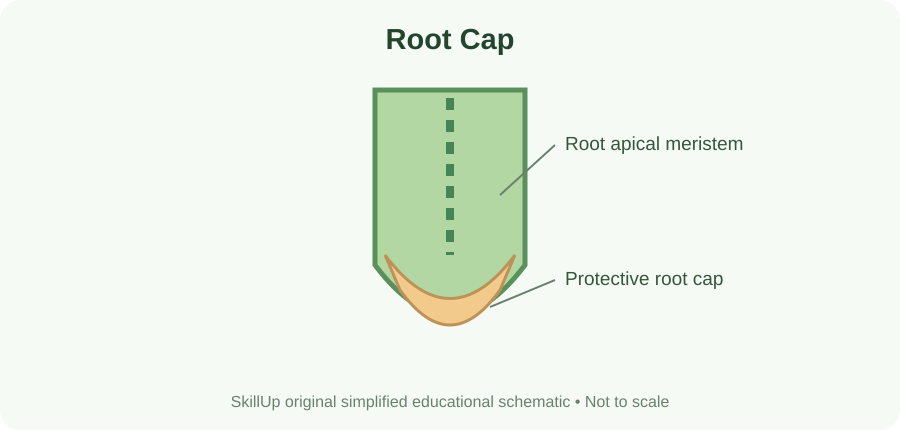
Root apical meristem.
Root-cap mucilage and protective cap cells.
Sedimenting starch-filled amyloplasts in statocytes.
The endodermis is the innermost cortical layer of roots, acting as a selective barrier to movement of water and solutes into the stele.
A single cell layer at the inner boundary of the root cortex, surrounding the pericycle.
Suberin-rich bands in radial and transverse walls block unrestricted apoplastic flow.
Water and ions must cross a membrane to pass the endodermal barrier.
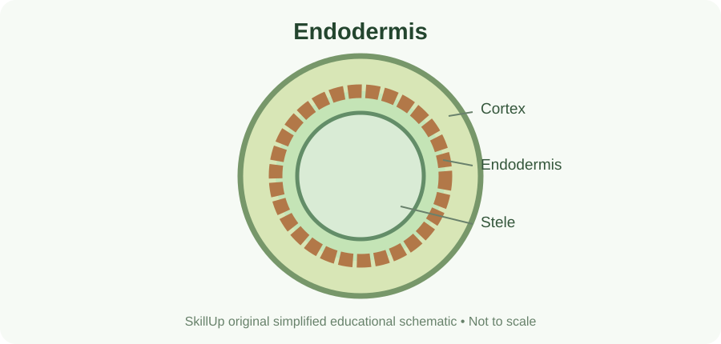
Innermost layer of the cortex.
Suberin.
Unrestricted apoplastic movement.
The pericycle lies just inside the endodermis and contributes to lateral root formation and, in many dicots, secondary growth.
Outermost layer of the stele, immediately internal to the endodermis.
Lateral roots originate endogenously from pericycle cells.
In dicot roots, pericycle cells can contribute to vascular cambium and cork cambium formation.
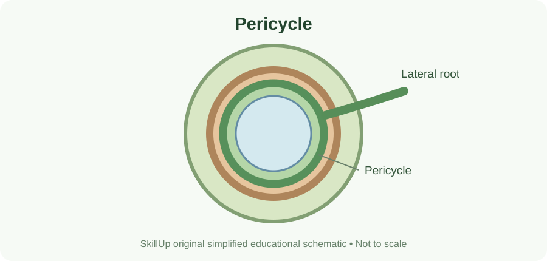
Just inside the endodermis.
Pericycle.
Cork cambium; it also contributes to vascular cambium.
Vascular bundles are classified by the relative arrangement of xylem and phloem into radial, conjoint and concentric types.
Xylem and phloem occupy alternate radii, as in most roots.
Xylem and phloem occur on the same radius; collateral bundles have phloem outside xylem.
One vascular tissue surrounds the other, as in amphicribral or amphivasal bundles.
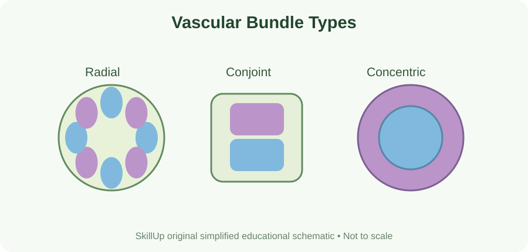
Radial.
Conjoint bundle with phloem outside xylem.
Phloem surrounds xylem.
Conjoint vascular bundles are termed open when cambium is present between xylem and phloem, and closed when cambium is absent.
Cambium enables secondary xylem and phloem formation, common in dicot stems.
No vascular cambium between xylem and phloem, common in monocot stems.
Both open and closed bundles contain xylem and phloem; the defining difference is cambium.
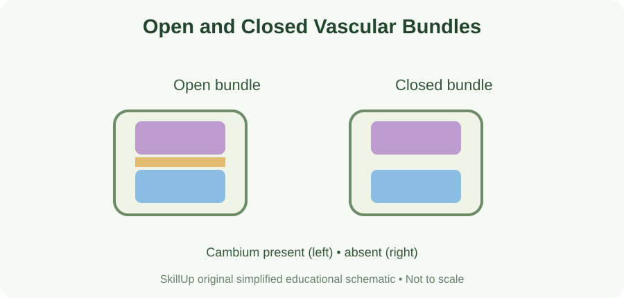
Cambium present.
Monocot stem vascular bundle.
Open bundle.
A continuous vascular cambium ring develops in many dicot stems by joining fascicular and interfascicular cambium, producing secondary vascular tissues.
Fascicular cambium in bundles joins newly formed interfascicular cambium between bundles.
Cambium produces secondary xylem toward the inside, contributing most to wood.
Cambium produces secondary phloem toward the outside, increasing girth.
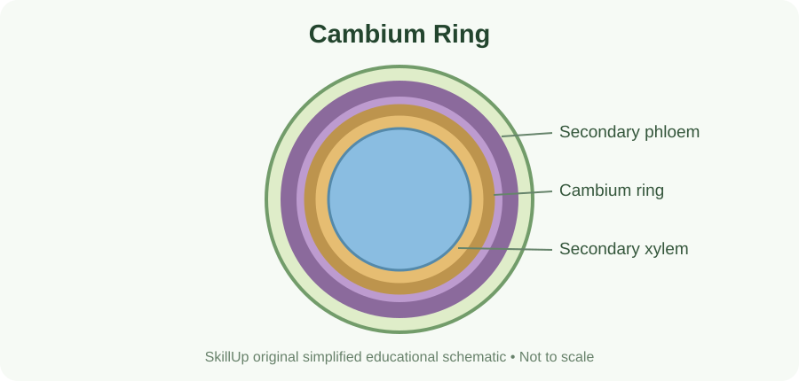
Fascicular and interfascicular cambium.
Inside.
Outside.
Secondary xylem is produced inward by vascular cambium and forms most of the wood of woody dicot stems and gymnosperms.
Vascular cambium adds secondary xylem to its inner side, increasing stem girth.
Vessels or tracheids transport water; lignified fibres contribute strength.
Seasonal cambial activity can create earlywood and latewood growth rings.
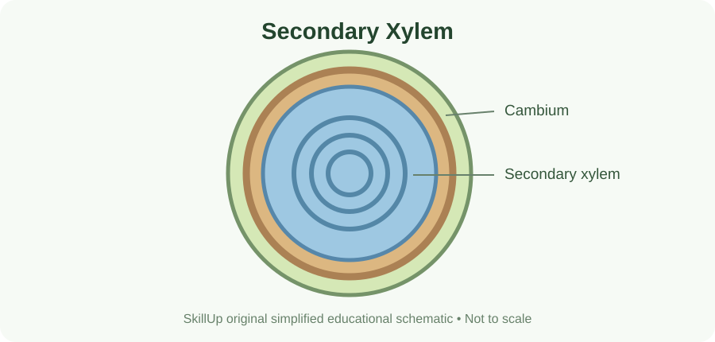
Vascular cambium.
Inner side.
Water conduction and mechanical support.
Secondary phloem is formed outward by vascular cambium and transports sugars and other organic solutes in woody plants.
Vascular cambium adds secondary phloem to its outer side during secondary growth.
Sieve elements move photosynthates; associated cells help maintain transport.
Secondary phloem lies outside vascular cambium and contributes to inner bark.
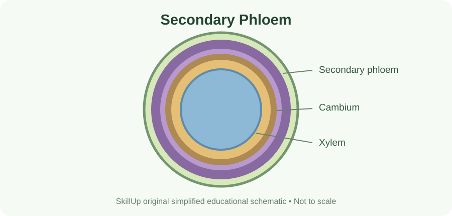
Outer side.
Translocation of organic food substances.
Yes.
Lenticels are porous regions of periderm that allow gaseous exchange between internal tissues and the atmosphere in woody organs.
Lenticels permit oxygen and carbon dioxide diffusion through otherwise protective periderm.
Cork cambium produces loosely arranged complementary cells at lenticel sites.
Lenticels often appear as small raised spots or breaks on woody bark.
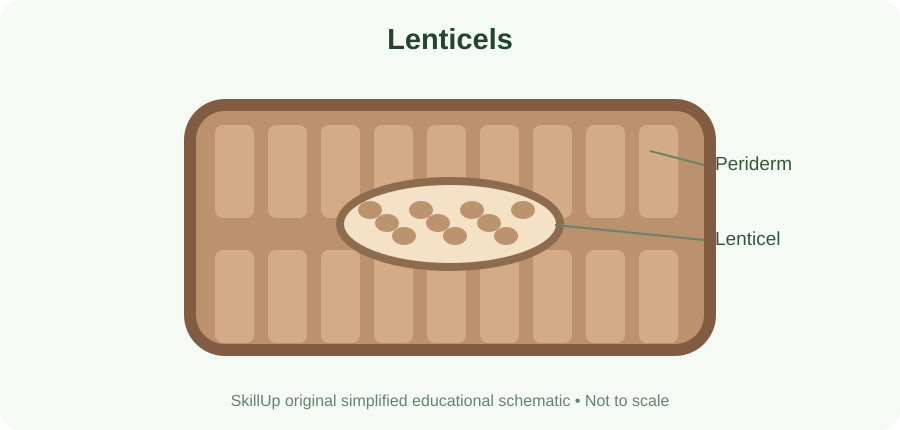
Gaseous exchange.
Periderm of woody stems and some fruits.
No.
Medullary (vascular) rays are radial bands of living parenchyma that enable lateral movement and storage of substances in woody stems.
Rays extend across secondary xylem and/or phloem, perpendicular to the main conducting axis.
Ray cells help move water, nutrients and metabolites sideways.
Living ray parenchyma stores starch and other reserves.
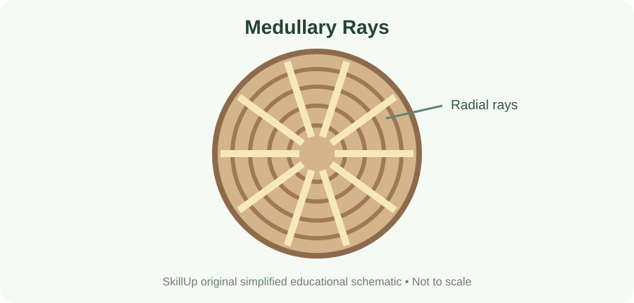
Parenchyma.
Radially or laterally.
Starch.
A floral formula summarises a flower using standard symbols and numbers; a floral diagram shows the spatial arrangement of its floral organs.
K = calyx, C = corolla, P = perianth, A = androecium and G = gynoecium.
⊕ indicates actinomorphic, % indicates zygomorphic; ⚥ indicates bisexual.
Floral diagrams depict relative positions, fusion, number and arrangement of sepals, petals, stamens and carpels.
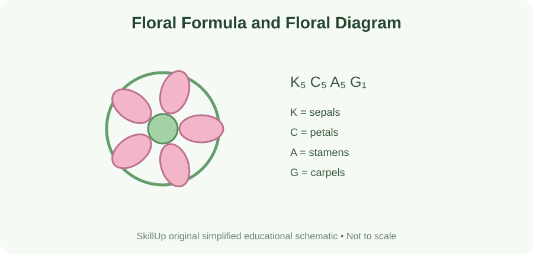
Androecium.
Actinomorphic (radially symmetrical) flower.
Relative spatial arrangement and relationships of floral organs.
Cellulose wall → plastids → large central vacuole → plasmodesmata
Non-living, freely permeable outer covering, mainly cellulose; provides mechanical support and prevents osmotic bursting.
Chloroplasts perform photosynthesis; chromoplasts contain pigments; leucoplasts store food. Plastids have their own DNA and 70S ribosomes.
Large vacuole bounded by tonoplast; cell sap supports turgor, storage and osmoregulation.
Cytoplasmic connections through adjacent plant cell walls permit cell-to-cell communication and transport.
Nucleus, mitochondria, endoplasmic reticulum, Golgi apparatus and 80S cytosolic ribosomes are present.
Cell wall commonly gives a defined shape. Not all plant cells contain chloroplasts; root cells generally lack them.
| Feature | Plant cell | Animal cell |
|---|---|---|
| Cell wall | Present, mainly cellulose | Absent |
| Plastids | Present in many cells | Absent |
| Vacuoles | Typically one large central vacuole in mature cells | Usually small or temporary |
| Centrioles | Absent in most higher plant cells | Usually present |
| Plasma membrane | Present | Present |
| Mitochondria | Present | Present |
The wall is generally freely permeable; the plasma membrane is selectively permeable.
Non-photosynthetic plant cells, such as many root cells, lack chloroplasts.
Plastids and mitochondria have 70S ribosomes; cytosolic eukaryotic ribosomes are 80S.
The tonoplast is the vacuolar membrane, not the cell wall or plasma membrane.
Tonoplast.
Plasmodesmata.
Yes. Plant cells carry out cellular respiration in mitochondria.
Phospholipid bilayer → fluid proteins → selective permeability → transport and signalling
Amphipathic phospholipids arrange with hydrophilic heads facing water and hydrophobic fatty-acid tails facing inward.
Singer and Nicolson (1972): proteins are embedded in a dynamic lipid bilayer; many components move laterally.
Small nonpolar molecules cross the lipid core relatively readily; ions and many polar solutes need membrane transport proteins.
Simple diffusion, facilitated diffusion and osmosis occur without direct ATP expenditure, down relevant gradients.
ATP-driven pumps can move solutes against electrochemical gradients; secondary active transport uses stored gradient energy.
Membrane proteins enable recognition, signalling, adhesion, endocytosis and exocytosis.
| Mechanism | Direction / energy | Example |
|---|---|---|
| Simple diffusion | Down gradient; no ATP | O₂, CO₂ across bilayer |
| Facilitated diffusion | Down gradient; channel or carrier; no direct ATP | Ion channel or glucose carrier |
| Osmosis | Net water movement down water-potential gradient | Water entering a hypotonic cell |
| Primary active transport | Against electrochemical gradient; ATP-driven | ATP-powered ion pump |
| Vesicular transport | Membrane budding/fusion; energy-dependent | Endocytosis and exocytosis |
Polar heads face aqueous surroundings; nonpolar tails point into the bilayer interior.
Membrane fluidity does not mean every solute can cross without a transporter.
The plant cell wall is mainly cellulose; the plasma membrane is a lipid–protein selective barrier.
The membrane around the central vacuole is the tonoplast, not the plasma membrane.
Hydrophobic fatty-acid tails.
No. It moves solutes down their gradient through channels or carriers.
Water exits; the protoplast shrinks away from the cell wall (plasmolysis).
Fluid = lateral movement of lipids and many proteins · Mosaic = proteins embedded in or associated with the bilayer
S. J. Singer and G. L. Nicolson proposed the fluid mosaic model in 1972.
Hydrophilic phosphate heads face aqueous surroundings; hydrophobic fatty-acid tails face the membrane interior.
Integral proteins embed within or span the bilayer; peripheral proteins associate with membrane surfaces.
Many phospholipids and some proteins move laterally. Fluidity varies with lipid composition, temperature and sterols.
Glycoproteins and glycolipids commonly expose carbohydrate chains on the extracellular side for recognition.
A dynamic selective membrane supports transport, cell signalling, membrane trafficking and cell recognition.
| Component | Position | Key function |
|---|---|---|
| Phospholipids | Bilayer | Fluid, selectively permeable barrier |
| Integral proteins | Embedded / transmembrane | Channels, carriers, receptors |
| Peripheral proteins | Membrane surface | Support, enzymes, signalling |
| Carbohydrate chains | Often extracellular face | Recognition and adhesion |
| Sterols | Among phospholipids in many eukaryotic membranes | Modulate membrane fluidity |
Membrane components can move, but the hydrophobic core still restricts ions and many polar solutes.
Integral proteins embed in the bilayer; peripheral proteins attach to the surface.
Lateral diffusion is common; phospholipid flip-flop between leaflets is comparatively rare without enzymes.
Cholesterol is prominent in animal cell membranes; plant membranes contain other sterols too.
Singer and Nicolson, 1972.
Different proteins embedded in or associated with the phospholipid bilayer.
Toward the interior of the bilayer, away from surrounding water.
Passive follows a gradient; active requires energy; vesicular transport moves larger cargo.
Net movement of particles down their concentration gradient without ATP or membrane carrier proteins. Small non-polar molecules such as O₂ and CO₂ can cross the lipid bilayer.
Net movement of water across a selectively permeable membrane from higher water potential to lower water potential.
Specific channel or carrier proteins help solutes move down their electrochemical gradient without direct ATP use.
Energy-dependent movement against an electrochemical gradient. Primary active transport uses ATP directly; secondary active transport uses an ion gradient.
The plasma membrane encloses extracellular material in vesicles. Includes phagocytosis and pinocytosis in appropriate cells.
Intracellular vesicles fuse with the plasma membrane to release contents outside a cell, such as secretory products.
| Process | Protein required? | Direction | Energy |
|---|---|---|---|
| Simple diffusion | No | Down gradient | No ATP |
| Facilitated diffusion | Yes | Down gradient | No direct ATP |
| Primary active transport | Yes | Against gradient | ATP directly |
| Secondary active transport | Yes | Coupled to another ion gradient | Stored gradient energy |
Simple diffusion.
Net movement of water across a selectively permeable membrane from higher to lower water potential.
No. It occurs down an electrochemical gradient via channels or carriers.
Directly from ATP hydrolysis.
Water leaves; the protoplast can shrink away from the cell wall (plasmolysis).
RER = proteins; SER = lipids. ER is a connected membrane network.
The ER is a network of membrane-bound tubules and flattened cisternae in eukaryotic cytoplasm, continuous with the outer nuclear membrane.
Ribosomes on the cytosolic surface synthesize many secreted, membrane and lysosomal proteins.
Lacks bound ribosomes and is important in lipid and steroid synthesis, detoxification and calcium storage.
Many proteins enter the RER lumen or membrane and move to the Golgi in transport vesicles.
ER contributes proteins and lipids to cellular membranes.
The sarcoplasmic reticulum in muscle stores and releases Ca²⁺ during contraction.
| Feature | Rough ER | Smooth ER |
|---|---|---|
| Ribosomes | Present on cytosolic surface | Absent |
| Main synthesis | Secretory and membrane proteins | Lipids and steroids |
| Typical form | Flattened cisternae | Tubular network |
| Other roles | Protein folding and processing | Detoxification and Ca²⁺ storage |
Rough endoplasmic reticulum (RER).
Smooth endoplasmic reticulum (SER).
Transport vesicles carrying proteins and lipids.
Sarcoplasmic reticulum.
No. Prokaryotes lack membrane-bound organelles such as ER.
ER → Golgi → Vesicles → Destination: proteins and lipids are synthesized, modified, sorted and delivered.
A functional network of membranes involved in synthesis, modification, packaging and intracellular transport of materials in eukaryotic cells.
Rough ER carries ribosomes and makes proteins for secretion, membranes and the endomembrane pathway. Smooth ER synthesizes lipids and participates in detoxification.
Receives ER cargo at the cis face, modifies and sorts it, then dispatches cargo from the trans side in transport vesicles.
Membrane-bound acidic compartments containing hydrolytic enzymes that digest and recycle cellular material, particularly in animal cells.
Membrane-bound compartments involved in storage, digestion and water balance. The plant central vacuole helps maintain turgor; its membrane is the tonoplast.
Transport vesicles bud from donor membranes and fuse with target membranes, allowing cargo movement between compartments and the cell surface.
| Included (NCERT functional grouping) | Not included in this grouping |
|---|---|
| Endoplasmic reticulum | Mitochondria |
| Golgi complex | Chloroplasts and other plastids |
| Lysosomes | Peroxisomes |
| Vacuoles | Ribosomes (non-membranous) |
Exam note: The NCERT endomembrane grouping emphasizes ER, Golgi, lysosomes and vacuoles. In broader cell biology, related membrane-trafficking systems also include endosomes, vesicles, nuclear envelope and plasma membrane.
Endoplasmic reticulum, Golgi complex, lysosomes and vacuoles.
The cis face.
RER has attached ribosomes and makes many proteins; SER lacks attached ribosomes and is important in lipid synthesis.
No. They have distinct structures and functions.
The membrane surrounding a plant cell vacuole.
Cis receives → cisternae modify → trans sorts and ships.
Stacks of flattened membrane-bound cisternae form the Golgi apparatus, often accompanied by transport vesicles.
The cis or forming face usually receives cargo delivered from the ER.
The trans or maturing face sorts and dispatches cargo toward different destinations.
Golgi enzymes modify proteins and glycans, including glycosylation and trimming.
Cargo is packaged into vesicles for secretion, plasma membrane delivery or endolysosomal pathways.
Golgi stacks, called dictyosomes, participate in synthesis and secretion of cell-wall matrix polysaccharides.
| Feature | Cis face | Trans face |
|---|---|---|
| Position | Usually faces the ER | Usually faces destination membranes |
| Main role | Receives incoming vesicles | Sorts and exports cargo |
| Cargo flow | Entry side | Exit side |
| Terminology | Forming face | Maturing face |
Cis face.
Trans face.
Dictyosomes.
No. Ribosomes are associated with rough ER, not Golgi stacks.
Processing and secretion of cell-wall matrix polysaccharides.
Lysosome = acidic recycling compartment with hydrolytic enzymes.
Single-membrane organelles with an acidic interior and enzymes that break down biological macromolecules.
Hydrolytic enzymes digest proteins, nucleic acids, lipids and carbohydrates at acidic pH.
Lysosomal enzymes travel through ER and Golgi pathways and are delivered to endolysosomal compartments.
Material taken up from outside the cell can be digested after endocytic compartments fuse with lysosomes.
Cells recycle worn-out organelles and cytoplasmic components through delivery to lysosomes.
Plants typically use lytic vacuoles for many analogous degradative functions.
| Feature | Lysosome | Plant vacuole |
|---|---|---|
| Main role | Intracellular digestion and recycling | Storage, turgor and often digestion |
| Typical prominence | Common in animal cells | Large central vacuole in many mature plant cells |
| Membrane | Single membrane | Tonoplast |
| Internal conditions | Acidic, hydrolytic enzymes | Variable; lytic vacuoles are acidic |
Acid hydrolases.
One.
Lysosome-mediated degradation and recycling of intracellular components.
The lytic vacuole.
No. Mitochondria are the main site of oxidative ATP production.
Tonoplast = vacuole membrane; cell sap = vacuole contents; turgor = plant cell support.
A membrane-bound compartment containing fluid and dissolved substances. A large central vacuole is common in mature plant cells.
The single membrane enclosing a vacuole. Transport proteins regulate movement of ions and metabolites between the cytoplasm and vacuole.
Vacuolar fluid may contain water, dissolved ions, sugars, organic acids, pigments and waste products.
Water accumulation expands the vacuole and presses the protoplast against the cell wall, helping support herbaceous plants.
Plant vacuoles store solutes and may perform degradative functions using hydrolytic enzymes.
Contractile vacuoles in some freshwater protists expel excess water; food vacuoles participate in intracellular digestion.
| Type | Typical location | Main role |
|---|---|---|
| Central vacuole | Mature plant cells | Storage, turgor, homeostasis |
| Contractile vacuole | Some freshwater protists | Expels excess water |
| Food vacuole | Many protists | Digestion of engulfed food |
| Lytic vacuole | Plant cells | Intracellular degradation and recycling |
Tonoplast.
Cell sap containing water and dissolved substances.
Water accumulation generates turgor pressure against the cell wall.
Contractile vacuole.
Water exits, turgor falls and the protoplast may separate from the cell wall (plasmolysis).
Outer membrane → Intermembrane space → Inner membrane (cristae) → Matrix. Electron transport occurs at the inner membrane.
Mitochondria have a relatively smooth outer membrane and a highly folded inner membrane, with an intermembrane space between them.
Folds of the inner membrane increase its surface area and carry respiratory-chain complexes and ATP synthase.
Contains enzymes of the citric acid cycle, mitochondrial DNA, RNA and mitochondrial ribosomes.
The electron transport chain pumps protons across the inner membrane. ATP synthase uses the proton gradient to produce ATP.
Pyruvate oxidation and the citric acid cycle occur mainly in the matrix; oxidative phosphorylation occurs at the inner membrane.
Mitochondria contain their own DNA and ribosomes, can divide, and still depend on nuclear-encoded proteins for most functions.
| Region | Key function |
|---|---|
| Outer membrane | Boundary; permits passage of many small molecules through porins |
| Inner membrane | Electron transport chain and ATP synthase |
| Cristae | Increase inner-membrane surface area |
| Matrix | Citric acid cycle enzymes, mtDNA and ribosomes |
| Intermembrane space | Proton accumulation during electron transport |
Folds of the inner mitochondrial membrane.
Primarily in the mitochondrial matrix.
In the inner mitochondrial membrane.
ATP synthase.
They contain DNA and ribosomes and can divide, but depend heavily on nuclear genes.
70S = 50S + 30S in prokaryotic cytoplasm; 80S = 60S + 40S in eukaryotic cytoplasm. Svedberg units are not additive.
Ribosomes translate mRNA into polypeptides. They are non-membrane-bound complexes of ribosomal RNA and proteins.
Each ribosome has a small subunit that decodes mRNA and a large subunit that catalyzes peptide-bond formation.
Bacterial cytoplasmic ribosomes are typically 70S, consisting of 50S and 30S subunits.
Eukaryotic cytoplasmic ribosomes are typically 80S, consisting of 60S and 40S subunits.
Free ribosomes synthesize many cytosolic proteins; ribosomes bound to rough ER synthesize many secreted, membrane and endomembrane proteins.
Mitochondria and chloroplasts have their own ribosomes; chloroplast ribosomes are generally bacterial-type 70S, while mitochondrial ribosomes vary across eukaryotes.
| Feature | 70S | 80S |
|---|---|---|
| Typical location | Prokaryotic cytoplasm; chloroplasts | Eukaryotic cytoplasm |
| Large subunit | 50S | 60S |
| Small subunit | 30S | 40S |
| Primary function | Protein synthesis | Protein synthesis |
Important: The S value is a sedimentation coefficient, not a measure that adds arithmetically.
Translation of mRNA into proteins.
50S and 30S.
60S and 40S.
No. Ribosomes are non-membrane-bound ribonucleoprotein complexes.
Svedberg units measure sedimentation behaviour and are not additive.
Chloro = green/photosynthesis · Chromo = coloured pigments · Leuco = colourless/storage.
Double-membrane organelles found in plant cells and many algae. Plastids develop from precursor plastids and perform photosynthetic or storage functions.
Green plastids containing chlorophyll; the main sites of photosynthesis in plant cells.
Plastids enriched in carotenoid pigments that produce yellow, orange or red colours in many flowers and fruits.
Generally colourless plastids involved in biosynthesis and storage of food materials, especially in non-green tissues.
Plastids contain their own DNA and ribosomes but depend on nuclear-encoded proteins for many functions.
Some plastid types can interconvert during development; for example, green chloroplasts can become chromoplasts as certain fruits ripen.
| Plastid | Characteristic | Function / example |
|---|---|---|
| Chloroplast | Chlorophyll-containing | Photosynthesis in green leaves |
| Chromoplast | Carotenoid-rich | Colour in ripe tomatoes, petals |
| Amyloplast | Leucoplast subtype | Starch storage in potato tubers |
| Elaioplast | Leucoplast subtype | Lipid storage |
| Aleuroplast / proteinoplast | Leucoplast subtype | Protein storage |
Chloroplasts.
Carotenoids.
Storage of starch.
Elaioplasts.
They possess DNA and ribosomes, but depend on many nuclear-encoded proteins.
SkillUp Botany · Topic-wise quick revision